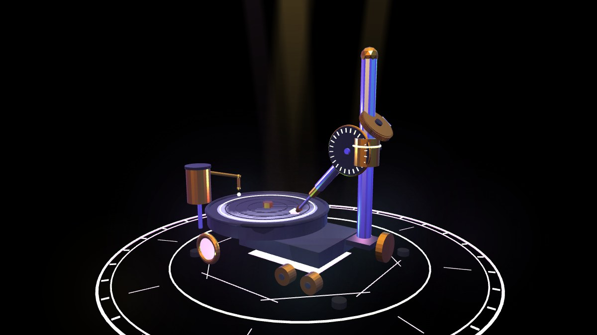
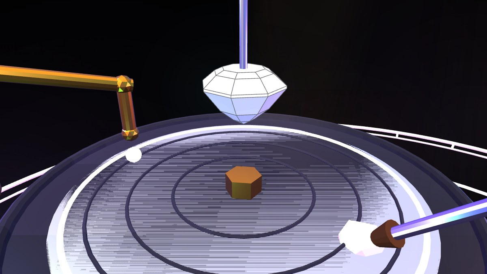
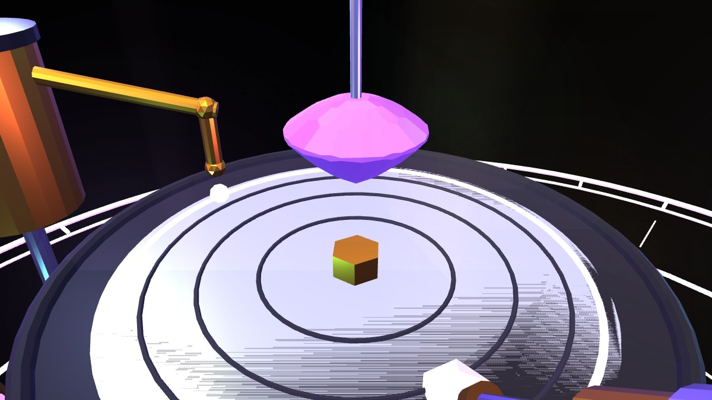

You are the cutter, not the audience.
A gemstone faceting-machine simulator that runs in your browser.
Tilt angle × 96-tooth index gear × depth stop — then press, blind. Release to reveal.
▶ PLAY IN BROWSER
The view masks while you grind. Longer press cuts deeper — you only see the result after you release. Every cut is permanent.
Five cut designs executed tier by tier, exactly like a physical faceting diagram: angle + index + depth stop, with a guided instruction sheet and compass rings.
An otherworld master grades your symmetry, yield and diagram accuracy — with a professionally sharp tongue. Every stone joins your collection tray.


| Diagram | Facets | Symmetry | Difficulty |
|---|---|---|---|
| Simple Sun | 17 | 8-fold | ⭐ start here |
| Standard Round Brilliant | 57 | 8-fold | challenge |
| Asscher Step Cut | 49 | 8-fold + girdle blades | intermediate |
| Portuguese | 97 | 16-fold staggered | hard |
| Trillion | 16 | 3-fold | quick |
The stone is a convex polytope — a raw vertex/face list. Every cut is one half-space plane clip, computed exactly: no voxels, no CSG library, no mesh booleans. Facets stay perfectly planar at any count (the Portuguese cut runs 121 faces), and re-cutting the same plane removes nothing — which is precisely the property that makes depth-stop faceting and one-tap symmetric array cuts work, same as on a physical machine.
The cut plane is always "world down"; the stone's tilt and index spin are quaternions, and the plane is transformed into stone-local coordinates. Real-time convex clipping, procedural gemstone faceting, computational geometry in the browser — in one HTML file with Three.js r128. View source, it's all there.
The diagram system is data-driven — contributing a new cut design is a data entry plus one picker card. The built-in auditor must report a 100% facet match before merge.
★ GitHub Contribute a diagram